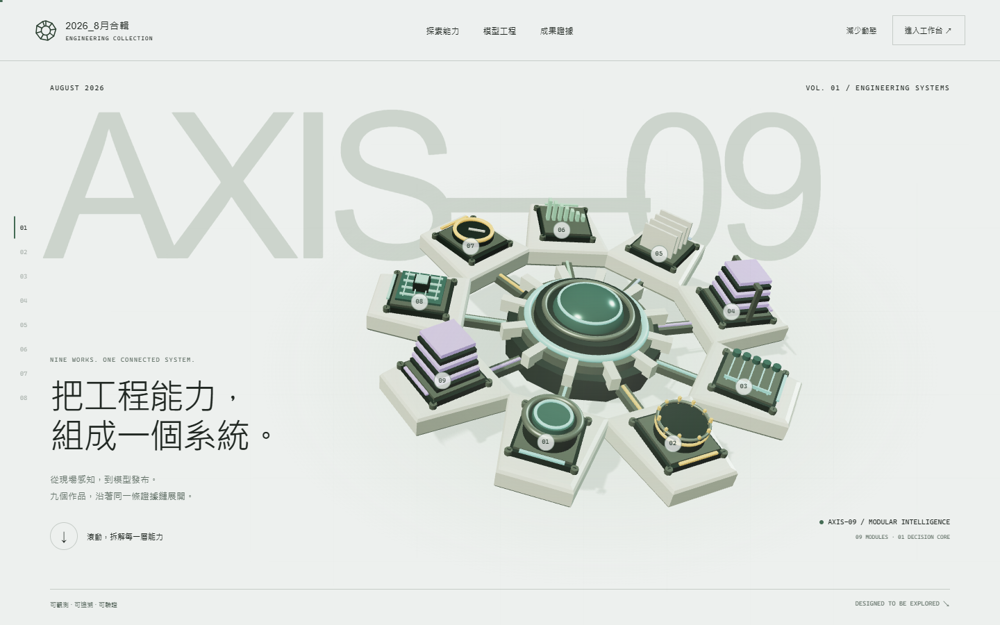


九個模組 · 可重用素材
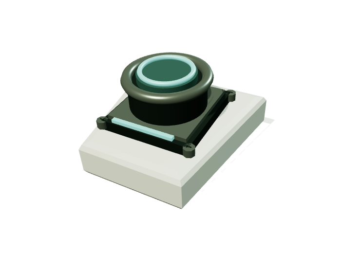
Surface AOI Inspector
視覺檢測 · 原專案實測
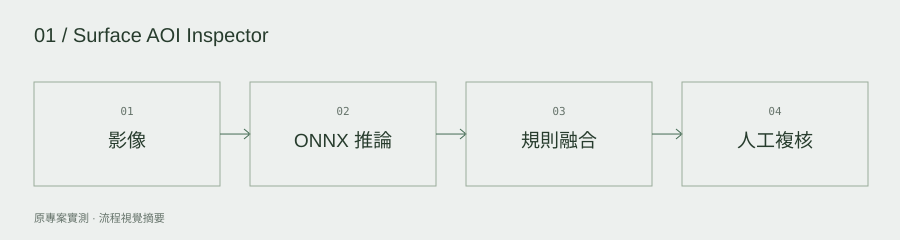
RTSafe Sensor Hub
即時安全 · 主機測試／硬體待驗證
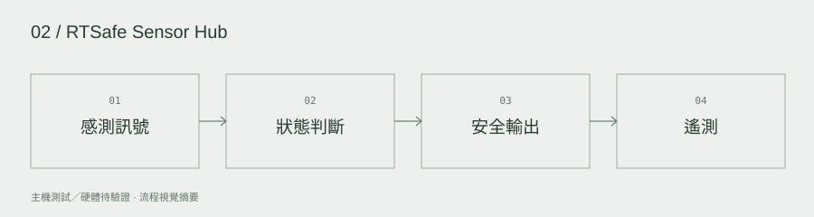
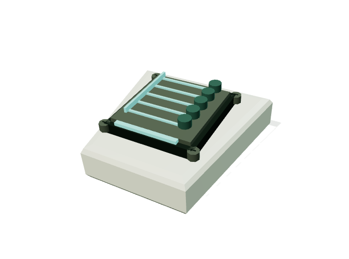
Retail Data Hub
SQL / ETL · 展示資料
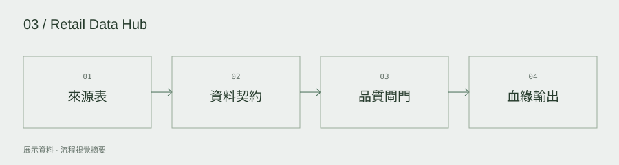
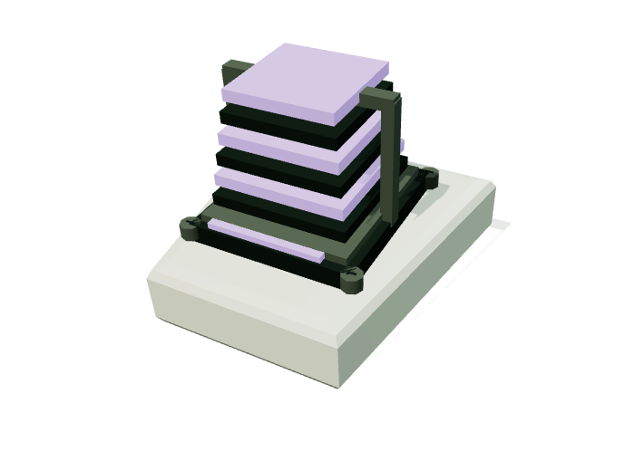
KnowledgeOps Studio
模型治理 · 本機治理示範
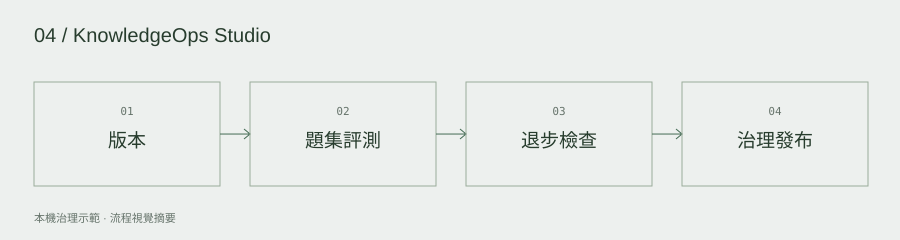
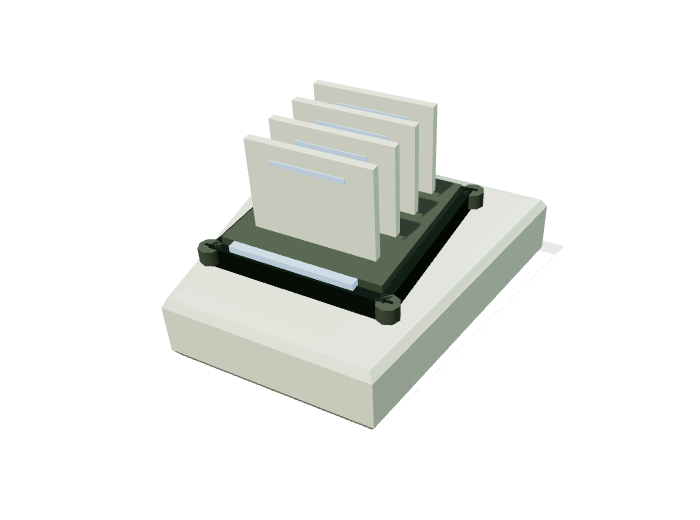
OpsFlow Agent
引用與工作流 · 合成文件與回答
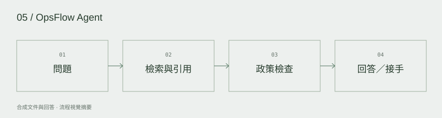
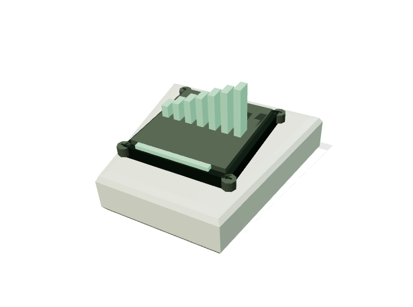
Demand Planning Workbench
情境預測 · 確定性展示情境
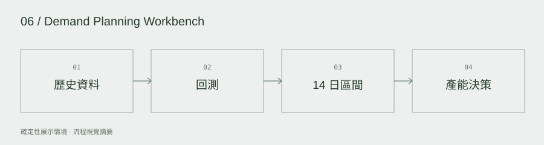
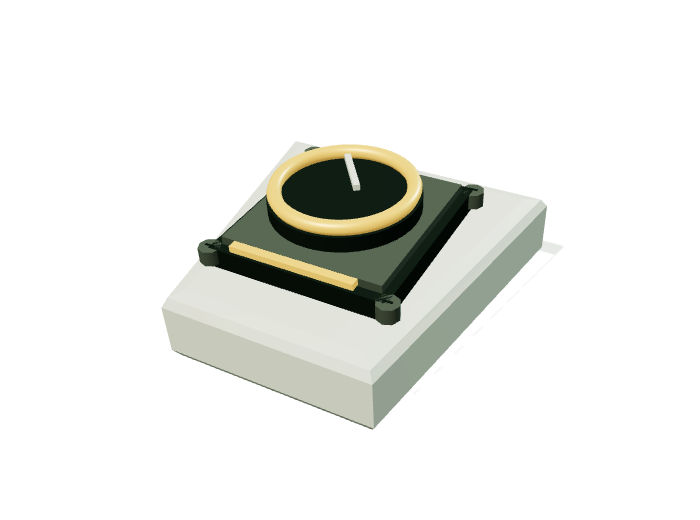
OpenFund Risk Workbench
風險分析 · 工程展示
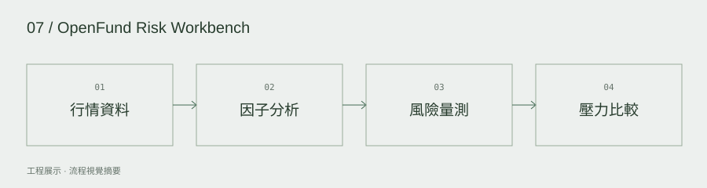
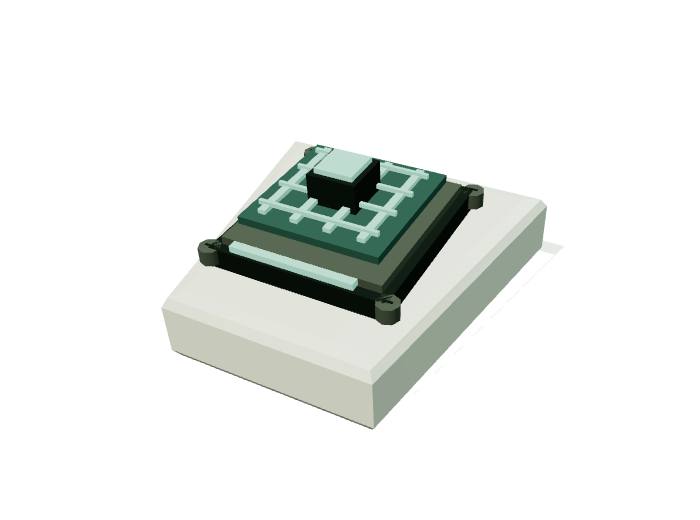
SimOps Studio
工程模擬 · 原型
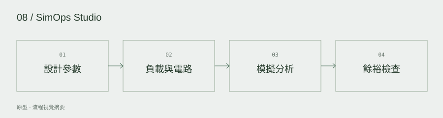
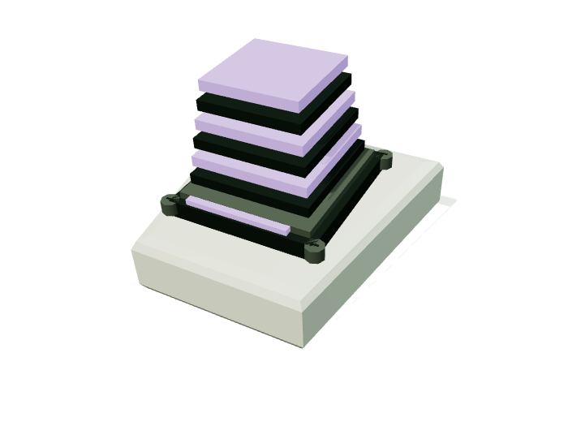
ModelForge-TW
微調與量化 · 本機真實推論／合成事件
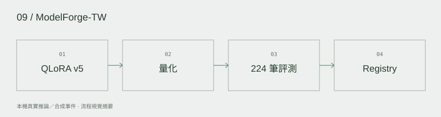
手機與替代閱讀
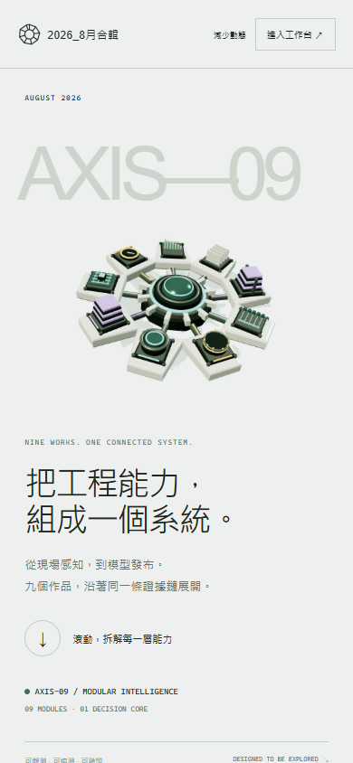
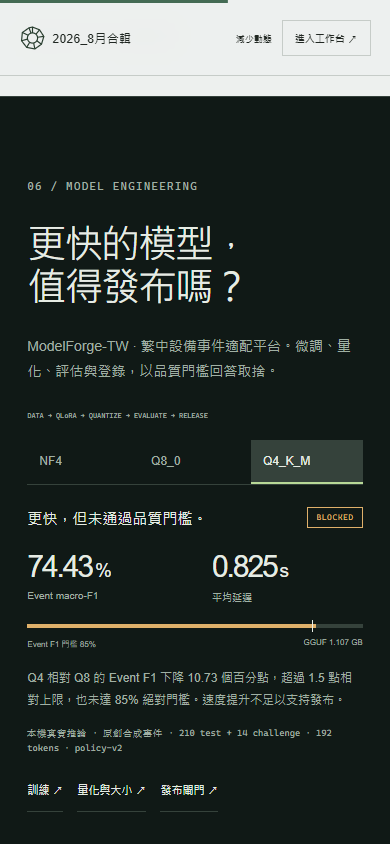
手機使用八張獨立關鍵畫面，取消長固定滾動。系統減少動態、手動減少動態、無 WebGL 與無 JavaScript 都保留可閱讀內容。